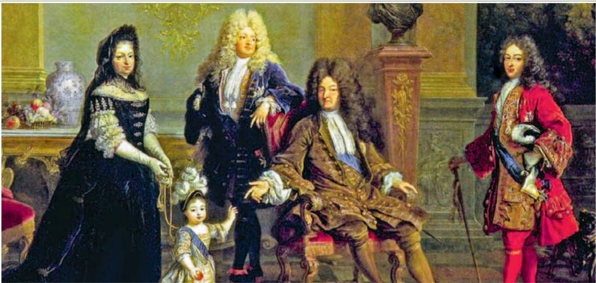
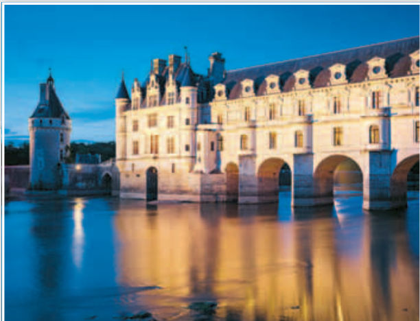
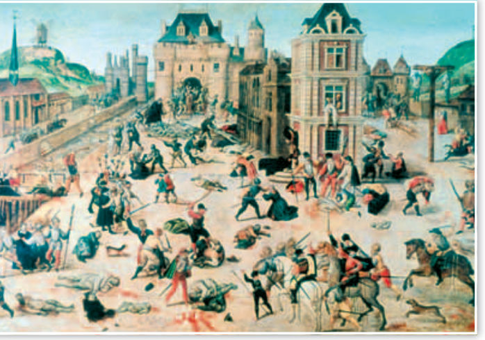
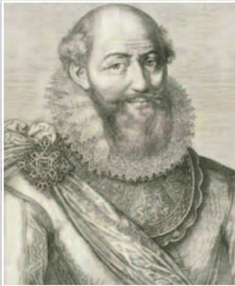
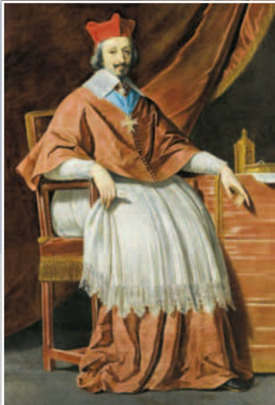
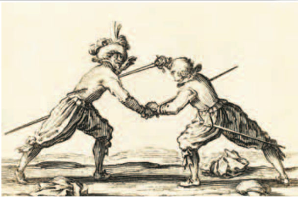
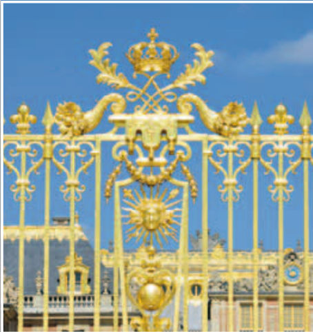
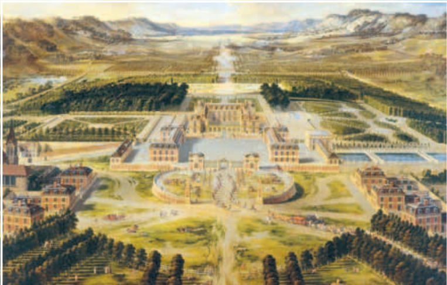
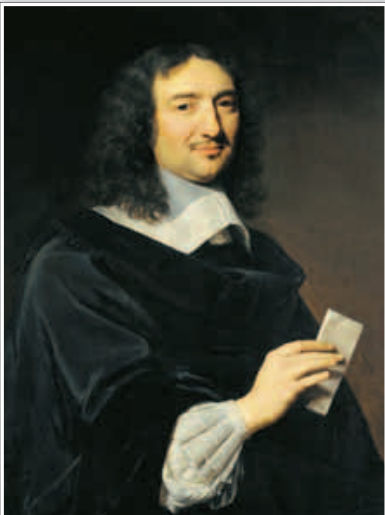

Сегодня история о том, как французский король шаг за шагом стал почти всемогущим, и чего ему это стоило. Устраивайся поудобнее.
Перед тем как начать

Слова, которые понадобятся:
Главные герои: короли Франциск I, Генрих IV Бурбон, Людовик XIII, Людовик XIV и кардинал Ришельё.
А вот что происходило в те же годы в мире и у нас, в России:
Глава первая
Французского короля окружали почти священным почётом. Он носил титул «христианнейшего» и должен был всю жизнь утверждать христианскую веру. Люди верили, что король — чудотворец: наложит руки на больного — и тот исцелится.
В XVI в. короли уже явно стремились к абсолютной, то есть неограниченной, власти. Даже обращаться к королю стали «Ваше Величество». А ведь до того так называли только императоров!
И всё-таки править как вздумается король не мог. Над ним стояли фундаментальные законы монархии. Нигде они не были записаны, но их освятила традиция, и менять или нарушать их король не имел права. Вот какие это были законы:
Кроме того, король обязан был соблюдать все законы Франции, пока сам не решит их изменить. И у него были обязанности перед подданными: заботиться о спасении их душ, судить по справедливости, а не по своему желанию, и не посягать на их собственность.
Вся власть в стране принадлежала королю. Но король сам разделил её между многими чиновниками и учреждениями, которые управляли и судили от его имени. Так королю было легче нести свою ношу, а заодно это мешало злоупотреблять властью.
Самыми могущественными из этих учреждений были парламенты (от французского parler — «говорить»). Не путай их с английским парламентом! Во Франции парламент — это суд. Самым влиятельным был Парижский парламент, а свои парламенты были и в некоторых провинциях.
У парламентов было важное право — регистрировать эдикты, то есть королевские законы. Получив новый закон, парламент проверял: не спорит ли он с прежними законами, не нарушает ли обычаи и чьи-то привилегии. Если что-то было не так, парламент мог попросить короля изменить текст закона.
Парламент подчинялся. Но люди могли посчитать такой закон королевским произволом, поэтому короли старались так не делать.
В парламентах заседали в основном дворяне. Поэтому парламенты защищали не только традиции, но и интересы дворянства, и часто мешали реформам. И ещё одна хитрость: свои должности члены парламентов покупали. Если король хотел кого-то уволить, он должен был вернуть ему деньги, а такая возможность у короля появлялась нечасто.
Иными словами: на словах власть короля безгранична, а на деле ему приходилось договариваться и считаться со старыми порядками.
Главной задачей королей стало сделать Францию единым и хорошо управляемым государством. Что для этого делали?
Но и армия, и чиновники стоили дорого. Поэтому власти всё время думали, как увеличить свои доходы.
Почему короли старались не заставлять парламент силой регистрировать эдикт?
Как члены парламентов получали свои должности?
Кто такие интенданты?
Глава вторая
С XVI в. во Франции изменилось само понятие «дворянин».
Раньше дворянство было сословием воинов. Дворянин вёл «благородный» образ жизни: соблюдал особые правила поведения, не занимался физическим трудом и пользовался привилегиями.
Теперь же дворянином считался тот, кто получил на это право от короля и обладал нужными качествами: доблестью, благородством. Дворянство передавалось по наследству.
А дальше случилось вот что: дворянство всё чаще стали не заслуживать, а покупать. Покупали должности, которые давали право на дворянство. К XVII в. дворян уже различали так:
Новоиспечённый дворянин обычно хотел жить точно так же, как старые дворяне. Но «дворянство шпаги» далеко не всегда пускало его в свой круг. Как думаешь, почему старые дворяне так не любили новых?
Кто такие «дворянство мантии»?
Как к XVI в. изменилось понимание того, кто такой дворянин?
Глава третья
XVI век был для Франции похож на двуликую монету. Его первая половина — расцвет. Вторая — кровавые войны.
Франция оправилась от бед прошлых веков — Столетней войны и чумы — и стала одним из ведущих государств Европы. При короле Франциске I (1515–1547) из династии Валуа росли торговля, города и мануфактуры.
Франциск I был высоким и широкоплечим, с живым умом. Любил книги, охоту и танцы, был поэтом и воином. Его считали щедрым правителем, образцовым дворянином и «Франциском во всём», то есть истинным королём французов.

Король покровительствовал искусству: у него работали знаменитые итальянцы Леонардо да Винчи и скульптор и ювелир Бенвенуто Челлини. На реке Луаре строились прекрасные замки.
Понемногу складывалась и абсолютная монархия: чиновников становилось больше (король набирал их из образованных горожан), казначейство перестроили, а доходы и расходы короны стали строже проверять.
Вторая половина века прошла под знаком религиозных войн (1562–1598). Они истощили страну.
В Реформацию уходили многие, кто был обижен на власть, в том числе аристократы. Большинство французских протестантов были кальвинистами, и их прозвали гугеноты (от немецкого слова, которое значит «товарищи, союзники»).
Монархия пыталась помирить католиков и протестантов, но не угодила ни тем, ни другим. Политика терпимости провалилась, и тогда корона решила подавить протестантизм силой. Страна раскололась надвое. Против королевской армии воевала армия протестантов со своими блестящими полководцами. Гугеноты захватили ряд провинций и, по сути, создали внутри Франции своё отдельное государство. Когда у обеих сторон кончались силы, заключали перемирие, но вскоре война вспыхивала снова.

В 1572 г. попробовали помириться через свадьбу. Сестру короля Маргариту Валуа выдавали замуж за лидера гугенотов, только что ставшего королём Наварры, Генриха Бурбона. Он, как и Валуа, был потомком Людовика Святого и имел право унаследовать французский престол. На свадьбу в Париж пригласили весь цвет протестантской знати.
Но надежды на мир рухнули. Через несколько дней после свадьбы, в ночь на 24 августа (день святого Варфоломея), католики — и дворяне, и парижская толпа — перебили 2–3 тыс. протестантов. А по всей Франции убили больше 10 тыс. гугенотов (в некоторых источниках говорится о 30 тыс.). Варфоломеевская ночь — самый кровавый эпизод религиозных войн.
Династия Валуа (1328–1589) угасла, и на престол взошёл тот самый Генрих IV Бурбон (1589–1610). Он объединил Францию и Наварру. К тому времени стало ясно, что в этих войнах победителей не будет. Погибла значительная часть населения, по голодной столице бродили волки, а союз католиков с королём Испании грозил расколоть страну.
Генрих выигрывал битвы и шаг за шагом отвоёвывал своё королевство. Но одних побед было мало, и пришлось идти на уступки:
В 1598 г. вышел Нантский эдикт. Он позволил людям обеих вер жить рядом. Гугеноты получили гражданские права, доступ ко всем должностям, крепости, привилегии и право на богослужение, правда, не везде.
Генрих IV стал одним из самых любимых королей Франции, о нём ходило множество легенд. По одной из них, он сказал, что хочет, чтобы в его королевстве не было ни одного крестьянина, который не мог бы приготовить себе на обед курицу в горшке.

Восстанавливать страну после войн королю помогал его ближайший соратник, гугенот герцог Сюлли. Строили и перестраивали дороги, мосты и каналы, которые связывали страну. Преображались города, особенно Париж. Изменили систему налогов, перестроили армию, а «дворянство мантии» стало играть в управлении ещё большую роль. Франция снова начала богатеть.
Почему Генрих IV стал католиком?
Кто помогал Генриху IV восстанавливать страну?
Глава четвёртая

Сын Генриха IV, Людовик XIII, правил в 1610–1643 гг. Но в 1624–1642 гг. политику Франции во многом определял его министр, кардинал Ришельё.
Интересно, что Ришельё готовился стать военным, но ему пришлось стать священником. Его семья получала доходы от епископства, и возглавить его должен был старший брат. А брат предпочёл уйти в монахи. Ришельё стал близким соратником Людовика XIII и получил сан кардинала.
Ришельё укреплял власть короля, и дворянам это очень не нравилось. Против кардинала устраивали заговор за заговором. Ответ был жёстким: многие замки по всей стране разрушили, заговорщиков казнили. А дуэли, на которых гибли тысячи дворян, запретили.

Дуэль — это поединок по особым правилам, обычно между дворянами и из-за вопросов чести. Если дворянин считал, что задета его честь, он готов был защищать её ценой крови, а то и жизни. Ни церковь, ни власти таких поединков не одобряли: считалось, что дворянин должен проливать кровь только на королевской службе.
Король и кардинал покончили и с «гугенотской республикой» — городами и крепостями, которые по Нантскому эдикту получили протестанты. Важным шагом стало взятие после долгой осады (1627–1628) неприступного порта Ла-Рошель. Город напрасно ждал помощи от англичан.
Ришельё задумал большую программу реформ, и до конца её так и не выполнили. Но всё же Франция построила морской флот, создала крупные военные порты, укрепила армию и начала захватывать колонии.
Ришельё проводил политику меркантилизма. Что это значит? Считалось, что богатство страны — это деньги. Значит, государство должно сделать всё, чтобы деньги не уходили за границу: развивать свою промышленность, продавать за границу больше, чем покупать, и поддерживать своих купцов. Ещё Ришельё покровительствовал писателям и учёным и создал Французскую академию.
Людовик XIII умер, когда его сын был ещё ребёнком. Преемником Ришельё стал итальянец кардинал Джулио Мазарини, которого не любили. Этим воспользовались Парижский парламент и аристократы. Опираясь на парижан, они в 1648–1653 гг. подняли мятеж против злоупотреблений правительства. Его назвали Фронда (от французского слова «праща»). Мятеж чуть не привёл к тому, что парламент ограничил бы власть короля, и подавили его с огромным трудом.
Вершиной французского абсолютизма считают правление Людовика XIV (1643–1715). Своим символом он выбрал солнце.

Проще говоря: солнце одно, оно светит всем одинаково и всем несёт жизнь. А вокруг него, как придворные, другие звёзды. Таким, по мысли Людовика, и должен быть король.
Людовик XIV очень много работал. Он писал, что царствовать — значит трудиться.
При нём монархия перестала быть посредником между сословиями. Опираясь на отлаженный аппарат чиновников, она начала вмешиваться во всё: в политику, в хозяйство, в жизнь общества.
Король хотел, чтобы во Франции была одна вера. Сначала на протестантов давили, заставляя их либо уехать, либо перейти в католичество. А в 1685 г. Людовик XIV и вовсе отменил Нантский эдикт. Вместе с уехавшими гугенотами Франция лишилась умелых работников и так нужных ей денег.

Недалеко от Парижа Людовик XIV построил новый великолепный дворец — Версаль (1661–1715) — и поселился там. И вот что получилось: раньше аристократы боролись с королём за власть, а теперь им хотелось жить при дворе и соперничать друг с другом за милость короля. Пышность двора и придворный церемониал достигли вершины. Все, даже самая высшая знать, теперь были слугами короля. Версальский двор, его правила и сам дворец стали образцом для многих государей Европы.

Соратник короля, министр финансов Жан-Батист Кольбер, тоже проводил политику меркантилизма. Пока он был у власти, мануфактур во Франции стало вдвое больше, процветала торговля, и королевство стало могучей морской державой.
Французские колонии были на нескольких континентах. В честь короля (Луи) назвали огромную новую колонию в Северной Америке — Луизиану. Но за бесконечные войны Франция заплатила такую цену, которая многим и сегодня кажется слишком большой.
Зачем Людовику XIV понадобился Версаль, если думать о знати?
Что потеряла Франция, когда отменили Нантский эдикт?
Что значит «меркантилизм»?
Скорее всего, будет проверочная
Вот вся запись из тетради по этой теме, как она есть. Прочитай её два раза. В первый раз — вслух, а во второй — закрывая рукой концы строк и вспоминая их.
Порядок строк — как в тетради.
Чем была ограничена абсолютная власть французского короля?
Парламенты во Франции — это…
Генеральные штаты — это…
С какого года не собирались Генеральные штаты?
Когда шли религиозные войны во Франции?
Кто такие гугеноты?
Что такое Варфоломеевская ночь?
Что дал гугенотам Нантский эдикт 1598 г.?
Что из этого НЕ делал кардинал Ришельё?
Какую политику проводил Ришельё (как в тетради)?
Фронда — это…
Кого называли «Король-Солнце»?
Что произошло в 1685 г.?
Теперь твоя очередь
Расположите в хронологической последовательности следующие события. Нажимай на события по порядку: какое было раньше всех — первым.
Это отрывок из сочинения кардинала Ришельё «Политическое завещание». Прочитай его внимательно.
Все политики сходятся во мнении, что если бы народ жил в слишком большом достатке, то было бы невозможно держать его в повиновении…
Народ следует сравнить с мулом, который, привыкнув к своей ноше, портится от продолжительного отдыха сильнее, чем от работы, однако трудиться он должен в меру, а груз, возлагаемый на это животное, должен быть сопоставим с его силами.
Ответь на вопросы:
Разгадка
За XVI–XVII вв. Франция стала одной из самых мощных держав, претендующих на первенство в Европе. Власть короля так укрепилась, что при Людовике XIV Франция стала классической страной европейского абсолютизма. Он опирался на мощную армию и разветвлённую бюрократию (большой аппарат чиновников).
Посмотри на дату и сначала вспомни сама, что тогда произошло. Только потом нажми и проверь себя.
На каждой карточке вопрос. Сначала ответь на него мысленно, а потом нажми на карточку и сравни со своим ответом.